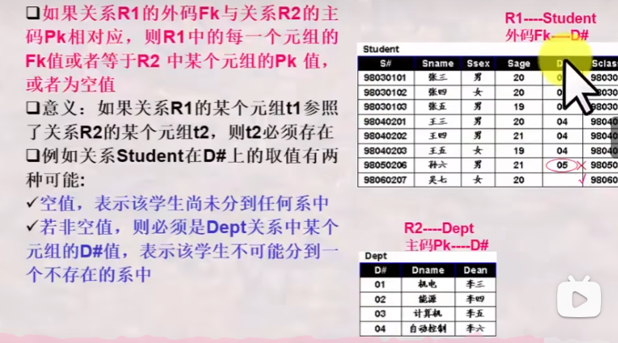
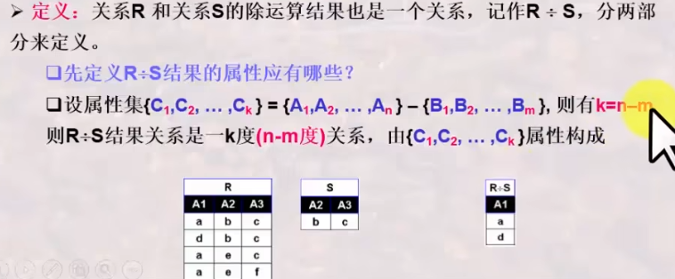
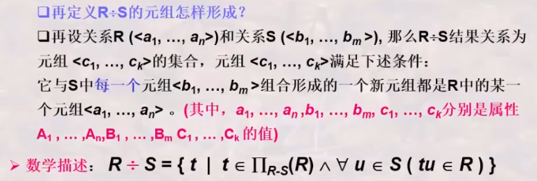
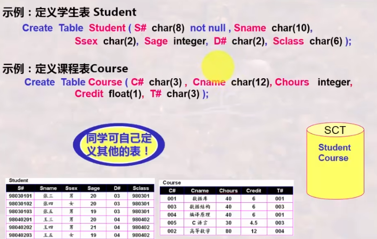
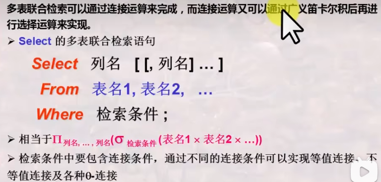

数据库学习（版本1）¶
学自战德臣老师。
b站课程：哈工大数据库系统 战德臣（全23讲）
章节划分¶
- 数据库系统基本概念
- 关系模型与关系运算
- 交互式sql语言及其应用
- 数据库应用系统程序开发
- 数据建模与数据库设计
- 数据库设计理论
- 数据库存储于索引技术
- 数据库基本操作的实现算法
- 数据库查询优化与查询实现
一、数据库系统基本概念¶
数据库系统：数据库，数据库管理系统，数据库应用程序，数据库管理员，计算机基本系统。
DDL,DCL,DBA,DML。
二、数据库的结构抽象与演变¶
重点与难点：
三级模式两层映像，物理独立性和逻辑独立性
数据-》模式-》数据模型
网状/层状模型-》关系模型-》oo数据模型
DBMS管理数据的三个层次¶
用户层次、概念层次、内部层次
数据与模式¶
什么叫模式？
模式就是对数据库中数据所进行的一种结构性的描述所观察到数据的结构信息。
类似于表的表头之类的东西，模式是对视图的抽象。数据的结构——模式
什么叫做视图？
某一种表现形式喜爱表现出来的数据库中的数据。（通俗来讲，就是我们select出来的所满足条件的展现出来的数据。）
三级模式(三级视图)¶
图画示例
外模式：很明显，外模式就是某一用户能够看到与处理的数据的结构描述。
概念模式：从全局角度理解管理的数据的结构描述，含相应的关联约束，体现在数据之间的内在的本质的联系。
内模式：存储在介质上的数据的结构描述，含存储路径、存储方式、索引方式等。
两层映像¶
外模式/概念模式 E-C映像
C-I映像，概念模式/内模式
数据库系统的标准结构¶

为什么要按照标准结构进行数据库系统的抽象？¶
两个独立性：逻辑数据独立性，数据的物理独立性。
逻辑数据独立性：在模式（概念模式）需改进型改变时，只需要改变对应的E-C映像，而不需要改变相应的外部模式，因此实现的数据的逻辑上的独立性，从而无需改变应用程序。
物理独立性：当数据库的存储结构发生变化的时候，我们可以只改变相应的C-I映像，从而不改变概念模式，进而不用改变外部模式，从而让数据库系统实现相关的稳定性。
数据模型¶
三大经典数据模型
关系模型：表的形式组织数据
层次模型：树的形式组织数据
网状模型：图的形式组织数据
常见非关系型数据库：neo4j，键值数据库redis
阿里的数据库：oceanbase。
关系模型的例子¶
层次模型的例子¶
网状模型的例子¶
数据库系统的演变与发展¶
四个阶段
1、数据库技术探索阶段
2、数据库技术确立阶段
3、数据库技术成熟阶段
4、数据库随机数深化发展阶段
得到了相关的系统化发展。
数据库系统
由层次模型数据库、网状模型数据库到关系数据库¶
由关系数据库到对象关系数据库、面向对象数据库¶
三、关系模型之基本概念¶
基本内容：
- 关系模型概述
- 什么是关系
- 关系模型中的完整性约束
围绕关系的相关概念和相关约束。
关系模型的提出¶
最早是由E.F.Codd在1970年提出，它是表及其表的处理方式中抽象出来的，是对传统表及其操作进行严格数学化定义基础上，引入了集合论和逻辑学。是数据库的三大经典模型之一，SQL也是建立在关系模型基础上的。
逻辑学：类似于大学时期学的离散数学的高级进阶版。
关系模型研究什么¶
一个关系就是一个TABLE
关系模型就是处理表的，由三个部分组成：
1、描述DB各种数据的基本结构形式
2、描述表与表之间所可能发生的各种操作
3、描述这些操作所应该遵循的约束条件（完整性约束）
关系模型三要素¶
基本结构
基本操作
完整性约束：实体完整性，参照完整性和用户自定义的完整性
关系运算：关系代数和关系演算。关系演算：元组演算和域演算。¶
数据库的一种思维：关系运算-》关系数据库语言-》DBMS的实现
表的基本构成要素
首先定义列的取值范围“域”
再定义元组及其所有可能组合成的元组：笛卡尔积
关系¶
由于笛卡尔积中的所有元组并不都是有意义的，因此...引入了相关的关系。
关系模式¶

举例：
关系模式与关系¶
关系模式可能会存在很多不同的关系，关系就是关系模式的某一种情况下的数据，同时也是笛卡尔积的子集。
关系的特性¶
列是同质，即每一列的分量都来自同一个域，是同一类型的数据，例如，总不能某一列既有性别，又有学号吧
列位置互换性：区分哪一列靠的是列名
行位置互换性：区分哪一行是靠某一或某几列的值。
关系是以内容来进行区分的，而不是属性在关系的位置来区分，因此同一个关系改变他的列的顺序是没有意义的。
在同一个关系中，存在相同的元组，去掉其中重复的元组。
属性不可再分特性：关系的第一范式
候选码/候选键¶
候选码可以有很多组，因此在使用的时候根据需要=选择其中一个即可。
主码/主键¶
主属性和非主属性¶
外码/外键¶
外码通常是链接两个或者多种关系的纽带。
小结¶
还学习了度/目 基数 候选码 主属性与非主属性 外码
度是关系中的属性的数目。
关系模型中的完整性¶
实体完整性¶
实体就类似于每个元素值，必须满足不为空。
空值¶
有空值的时候需要进行特殊处理，要特别注意。
参照完整性¶

用户自定义完整性¶
完整性约束：其实完整性可以理解为表中的每个元素都得满足一定的条件和规范，也就是说要求元素的格式完整，并进行相关的约束。
DBMS对于关系完整性的支持¶
四、关系模型之关系代数¶
基本内容：
1、关系代数之基本操作
2、关系代数之扩展操作
3、关系代数之组合与应用训练
4、关系代数之复杂扩展操作(选)
关系代数运算特点¶
基于集合，提供了一系列的关系代数操作：并、差、笛卡尔积、选择、投影和更名等基本操作
以及交、连接，关系除等扩展操作。
关系代数操作以一个或者多个关系为输入，结果是一个新的关系。
是一种抽象语言，是学习其他数据库的基础。
基本操作？¶
1、集合操作
2、纯关系操作
为什么提出关系代数
关系代数之基本操作¶
1、并相容性
2、并
3、差
例子：
4、广义笛卡尔积
数目确实是12，度数为6
相关性质
5、选择
6、投影操作
关系代数的扩展操作¶
1、交运算
2、连接操作
更名操作。
在需要进行自连接的时候使用。
特别注意：虽然我们在讲解相关的链接操作时，使用笛卡尔积然后再进行选择来得到链接结果，主要是方柏霓理解，但是当引入连接操作后，DBMS可以直接进行连接操作，而不需要先形成笛卡尔积。
3、等值连接
例子：
4、自然连接
相关例子：
关系代数操作之组合与应用训练¶
1、集合操作思维训练¶
相关练习。
有的时候可能逻辑上看起来是正确的但是语义是错的。
自己对自己做自然连接，结果还是这个关系自己。
前例我们也可以用交运算来实现。
书写关系代数的思维¶
基本思路：
关系代数复杂扩展操作¶
除运算¶
除法运算经常用于求解“查询.....全部的/所有的....”问题


相关例子：
,
外连接¶
外连接操作
外连接可以分为左外连接，右外连接，全外连接。
要注意相关的连接符号！
外连接操作的示例：
五、关系模型之关系演算¶
基本内容：
1、关系演算之关系元组演算
2、关系演算之关系域演算
3、关系演算之安全性
4、关于三种关系运算的一些观点
关系元组演算¶
1、概论¶
前面出现过关系演算形式
关系演算是以数理逻辑中的谓词演算为基础的。
关系演算是描述关系运算的另一种思维方式。
SQL语言是继承了关系代数和关系演算各自的优点所形成的。
按照谓词变量的不同，可分为关系元组演算和关系域演算。
- 关系元组演算是以元组变量作为谓词变量的基本对象
- 关系域演算是以域变量作为谓词变量的基本对象
2、关系元组演算公式的形式¶
公式只限于以上形式。
公式定义很简单，理解运用是关键
关系元组演算公式之原子公式及与、或、非、之理解与运用¶
1、元组演算公式之原子公式¶
例子：检索出年龄小于20岁并且是男同学的所有学生。
3、注意运算符之次序及语义正确性¶
存在量词与全称量词之理解与运用¶
1、存在量词与全称量词公式¶
2、存在量词与全称量词公式之应用¶
关系元组演算之应用训练语义正确性与等价性变换训练¶
1、元组演算的等价性变换¶
等价性示例：
例子：
存在量词和全称量词 的等价性
关系元组演算之应用训练四个最复杂例子¶
1、全都学过¶
2、全都没学过¶
3、至少学过一门¶
4、至少有一门没学过¶
关系元组演算之应用训练将关系代数转换为元组演算¶
1、元组演算公式域关系代数的等价性¶
2、元组演算公式总结¶

关系域演算¶
1、关系域演算公式¶
域演算是以域变量为基本单位。
基于关系域演算的QBE语言¶
1、关系域演算语言QBE¶
2、QBE的基本形式¶
3、QBE的操作命令¶
QBE的复杂条件书写域示例元素¶
qbe应用演练¶
关系演算的安全性¶
关系运算的安全性？
关系演算的约束
安全元组演算表达式
关于关系运算的一些观点¶
六、SQL语言之概述¶
基本内容：
1、SQL语言概述
2、SQL语言之ddl定义数据库
3、SQL语言之DML操纵数据库
重点难点：
SQL语言概述¶
1、SQL语言提出和发展
这个自行搜索即可，不要做过多解释
2、SQL语言的功能概述
SQL语言是集DDL,DML,和DCL与一体的数据库语言。
交互式SQL->嵌入式SQL->动态SQL等等。
利用SQL语言建立数据库¶
建立数据库
DDL通常由DBA来使用，也有经DBA授权后由应用程序员来使用。
创建Database¶
创建Table¶
数据类型

建立数据库¶
向表中追加元组的值-insert into¶
相关例子
利用SQL语言进行简单查询¶
1、单表查询
相关例子：
2、检索条件
检索条件的书写
要注意运算符的优先级
3、检索结果结果唯一性问题
4、结果排序问题
5、模糊查询问题

示例：检索所有姓张的学生学号及姓名
利用SQL语言进行多表联合查询¶
1、多表联合查询


2、重名之处理，表更名与表别名
3、不等值连接
4、多表联合查询训练
利用SQL语言进行增删改操作¶
1、SQL-之更新操作
2、SQL之INSERT
复杂用法：
3、SQL之DELETE命令
相关实例：
4、SQL之UPDATE
相关实例：
利用SQL语言修正与撤销数据库¶
1、SQL-DDL之撤销与修改
2、撤销基本表
3、撤销数据库
4、数据库指定与关闭命令